阅读博客的朋友可以到我的网易云课堂中，通过视频的方式查看代码的调试和执行过程：
http://study.163.com/course/courseMain.htm?courseId=1002830012
上一节，我们通过代码，实现了一个有限状态自动机，并将其应用于对整形和浮点数的识别。构造有限状态自动机，并驱动它，从而实现对输入字符串的识别，整个过程就是词法分析的本质。
上一节所开发的状态机，基于以下模型：
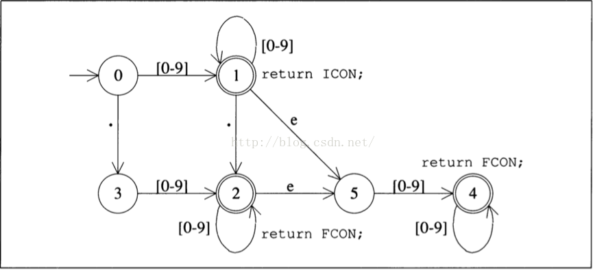
这个模型，是我们在代码中，手动写入程序的。实则上，它对应着一组正则表达式：
D [0-9] 表示0-9的字符类
{D}+ 表示由 0-9 构成的整形数值
({D}+ | {D}*\. {D}+ | {D}+ \. {D}*)(e{D}+)?表示浮点数或科学计数法
其中{D}+ 对应着状态机中，由0到1，然后在1中自转这一流程。最后一个正则表达式，对应图中由状态0到状态2，或4的流程。
那么，问题来了，给定一个正则表达式，可否直接生成一个有限状态自动机呢？答案是肯定的，大多数正则表达式识别程序，基本上都是先将其转换为自动机，然后通过驱动自动机来识别输入的，将正则表达式转换为有限状态自动机将是我们这几节的重点。
有限状态自动机的分类
有限状态自动机，其实可以分成两类。第一类是我们上面给出的，叫做确定性有限状态自动机: Deterministic finite automaton 简称DFA. 确定性的状态机有一个特点，就是给定当前状态和输入字符，那么下一个状态就能被唯一确定。例如基于上图，在状态1时，接收到字符0-9，那下一个状态一定只能是1，如果接收到字符 . ，那下一个状态，就一定只能是2. 更严谨的说， DFA 是这样一种自动机，从给定状态出去的边都对应着一个确定的字符，同时，从一个状态出去的两条边，他们对应的字符必定是不同的。
对应于DFA, 另一种状态机叫非确定性有限状态机: Nondeterministic finite automaton, 即NFA. 在实践中，要想顺利的将正则表达式转换为自动机，需要NFA的帮助。NFA 的特点是，从一个状态出去的两条边，可以有相同的对应字符。或者它的边可以对应一种特殊的字符叫”空”字符，该字符对应的符号是: ℇ.这种边表示，不需要任何输入，就可以从当前状态进入下一个状态。
举个例子，表达式(and | any) , 它对应的DFA如下:
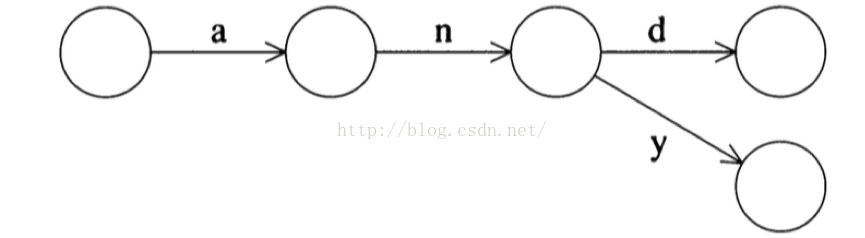
它对应的NFA 如下:
从初始状态开始，分化出两条边，两条边对应的字符是一样的
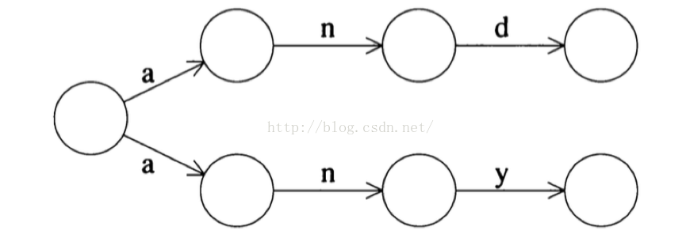
或者:
从初始状态分化两条对应字符为空字符的边，然后分别进入两个对应的状态机
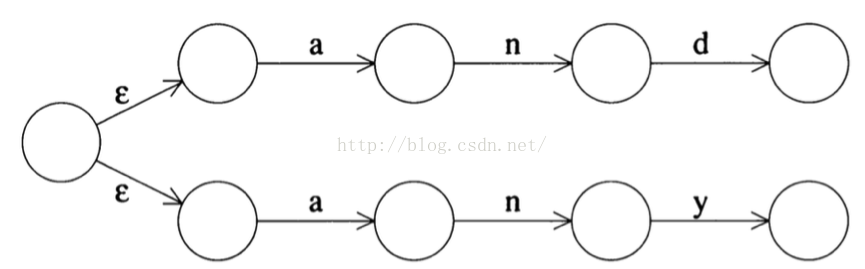
第二种NFA在程序设计中容易实现，因此，在下一节的代码中，我们将采用第二种NFA的实现模式。
NFA有一个明显的弱点就是，在代码设计中，很难用数据结构来对它进行表示。特别是，当对应于一个输入字符，NFA可以跳转到多个状态，那么，要想利用NFA去识别输入字符串就比较困难。一般而言，使用NFA的程序都需要经过下两个步骤：将正则表达式转换为NFA, 将NFA转换为DFA. 在后面的讨论中，我们将通过代码来展示这两种转换.
Thompson 构造法
将正则表达式转换为NFA的算法是由贝尔实验室的Ken Thompson 给出的，这哥们跟丹尼斯.里奇共同开发了Unix, 而他开发了C语言的前身 B 语言。
他的算法如下：
最简单的正则表达式是单字符匹配，例如a 匹配输入字符”a”, 那么该表达式的NFA 构造如下:
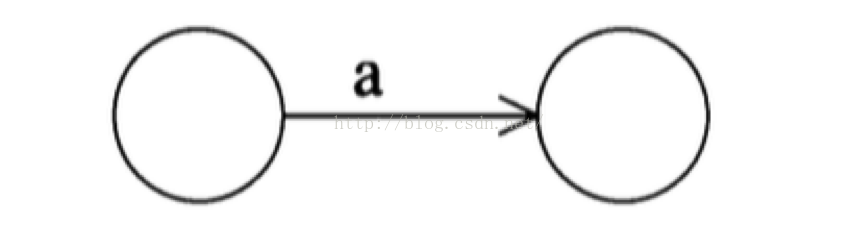
那么，两个这样的正则表达式合成的连接表达式ab 可以表示如下：
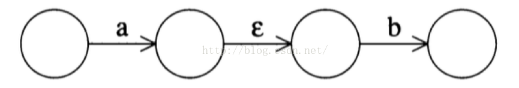
实际上，它是先分别构造出两个表达式的NFA, 然后通过一条ℇ边，将两个NFA首尾连接起来。
下面我们看看，两个表达式进行 OR 操作的时候 | ，NFA怎么构造，构造图如下：
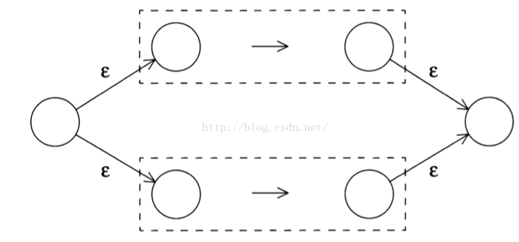
要构造两个表达式的或操作: exp1 | exp2, 根据图示，首先分别构造两个表达式exp1 , exp2 各自的NFA: NFA1（上头虚线框）, NFA2(下头虚线框), 然后再构造两个状态，初始状态（开头圆圈节点），和结束状态（末尾圆圈节点），初始状态延生处两条 ℇ 边，分别指向NFA1 和 NFA2 的开头，然后NFA1 和 NFA2的结尾各自延生出一条ℇ边，分别共同指向结束状态。
我们再看看 a | b 的NFA图：
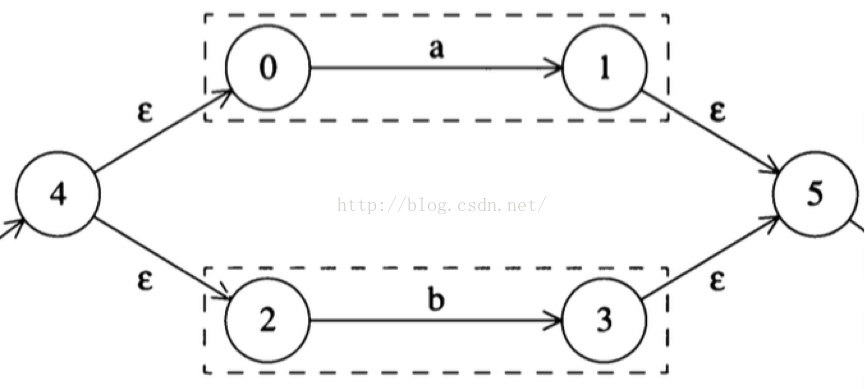
其原理跟前面所描述的是一样的。上头虚线框是表达式 a 的NFA, 下头虚线框是表达式 b 的NFA. 两个NFA的连接跟前面描述的一模一样
如果表达式是( (a|b) | cd) 呢，算法也同理，先构造 a | b 的NFA图，然后构造cd的NFA图。最后根据前面所说的办法，再将两个NFA连接起来：
上头大虚线框是 (a|d) 的NFA, 下头长匾虚线框是 cd的NFA. 然后首尾通过两个状态节点和ε边连接起来。

大家可以看到， Thompson构造算法其实是一个自我递归的过程
我们再看看相应的闭包操作的构造过程:
exp*的NFA:
如果是自我从复0次，那直接从下面的边走到末尾节点。
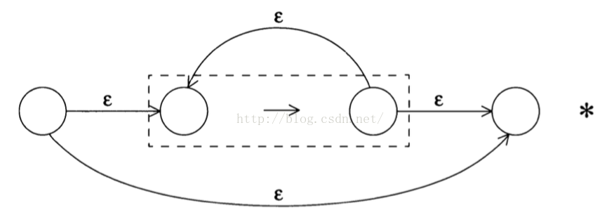
exp+（至少重复一次） 的NFA:
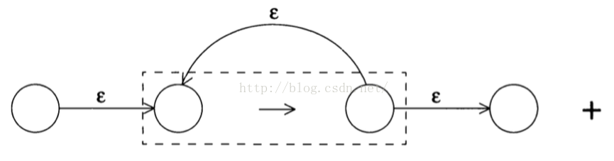
exp?(重复0或1次)的NFA:
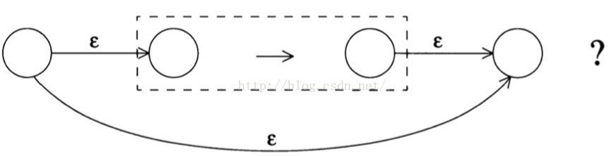
任何复杂的正则表达式它的NFA的构造都是上面几种构造的组合, 例如表达式
(D*\.D| D\.D*)
构造算法如下：
1. 构造 D 的NFA:
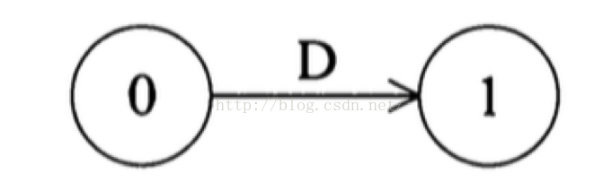
2. 构造 D*:
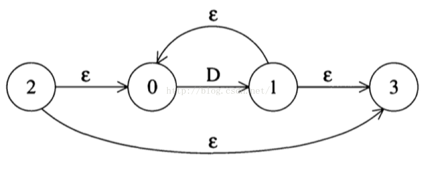
3. 构造 D*\.D (由于.在正则表达式中是特殊字符，如果要仅仅想要表达它的符号内容，要在前面加上反斜杠做转义):
. 号的前部分是D*, 后部分是 D 的NFA.
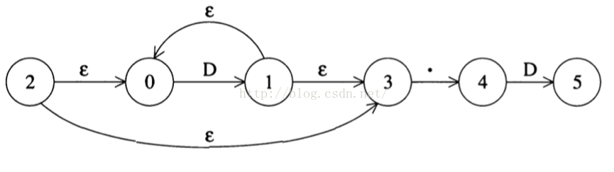
4. 构造 D\.D*, 该表达式的NFA其实就是将上图 . 后面的部分挪到开头。
5. 根据OR 的构造法， 构造整个表达式 (D*\.D | D\.D*)的NFA:
上头是 D*\.D 的NFA, 下头是 D\.D*的NFA
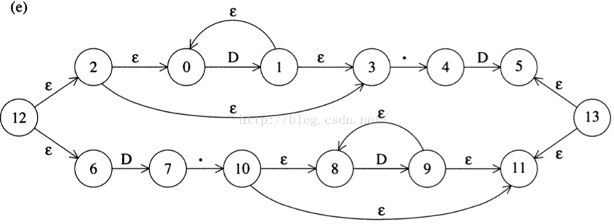
再复杂的表达式的NFA的构造，都是几种基础构造的重复组合运用。
我们这一节对概念和算法的介绍就到这里，根据我的习性，下一节肯定就是上代码了。